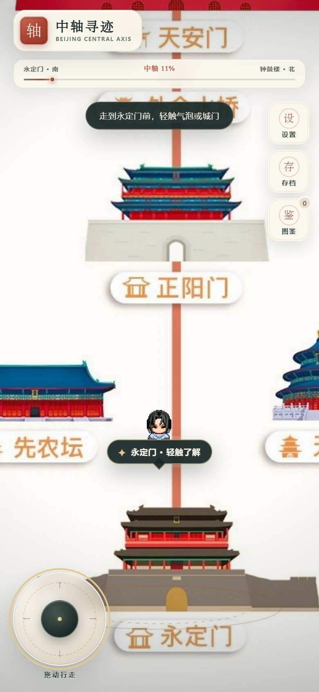
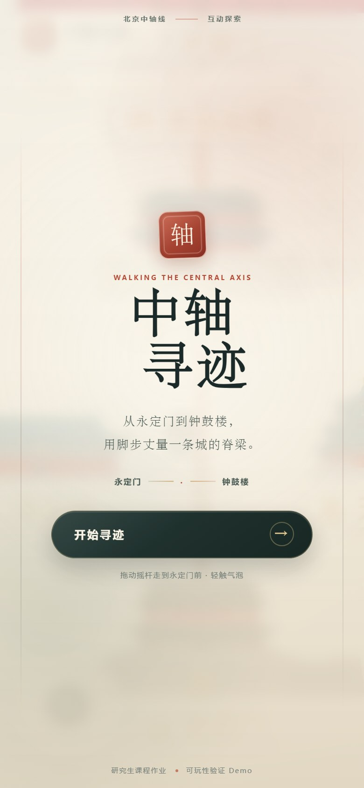
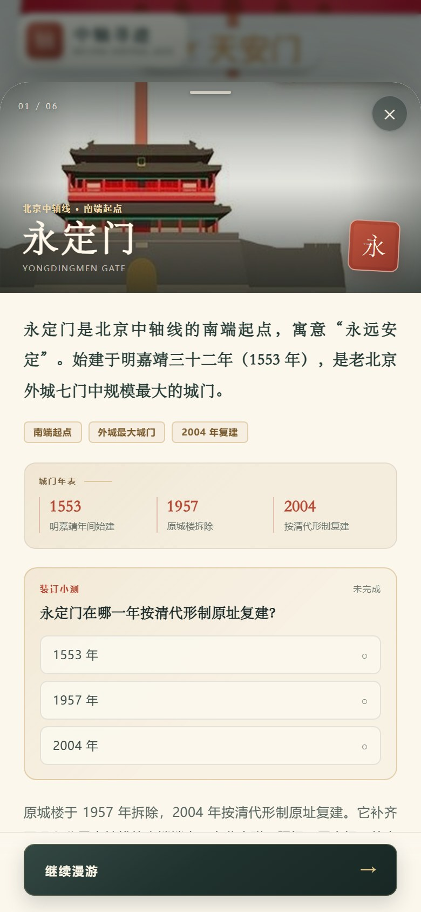
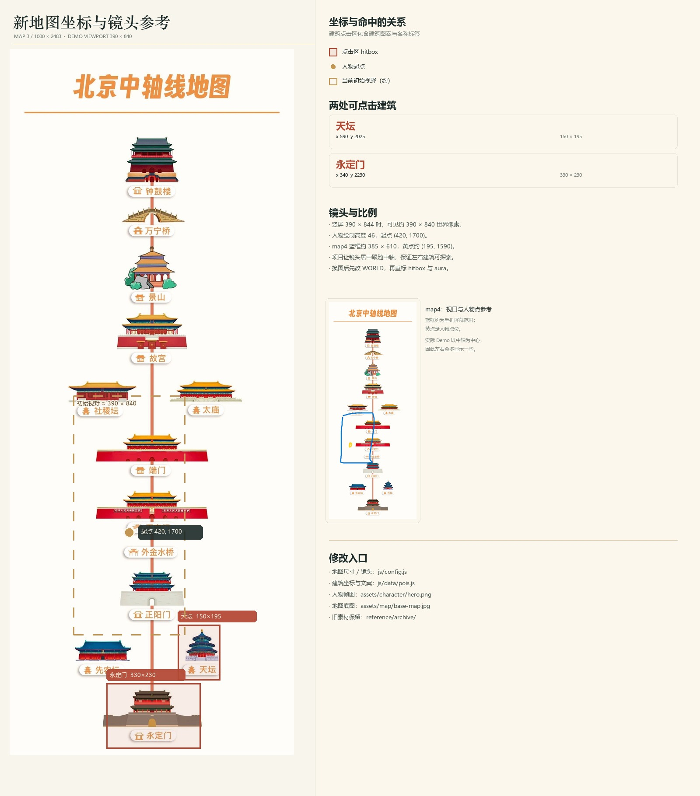
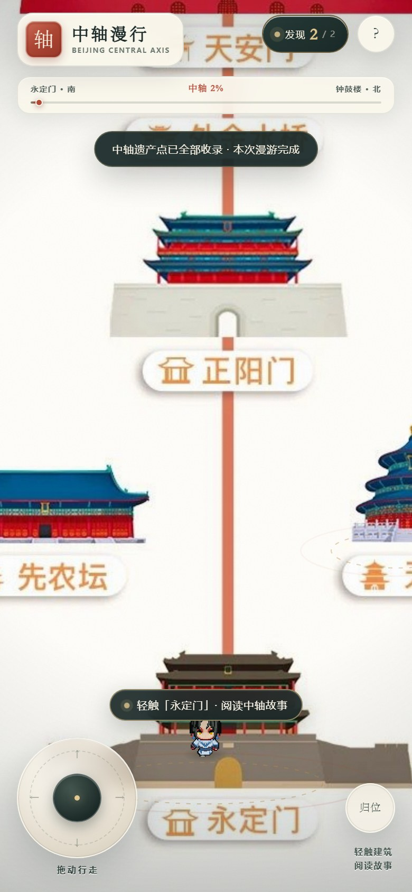
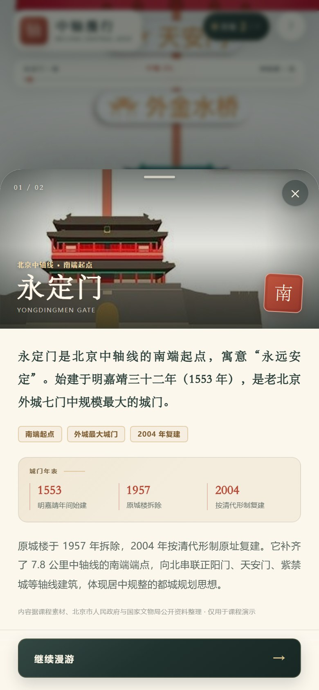

以“纸本中轴”为视觉母题，把一次城市漫游压缩成三分钟的轻量文化探索。走、看、读、收集，让中轴线成为一条可以步行的叙事线。

用一条中轴线，把“看建筑”变成“走到建筑面前”。玩家不需要学习复杂规则，30 秒内理解“拖摇杆、点建筑”。
产品形态是移动端 H5 文化漫游 Demo；目标不是商业级完整度，而是验证“北京中轴线文化 + 游戏化交互”的初步想法。体验关键词是克制、可读、可探索、文化温度。
地图、镜头、进度、排版都围绕一条垂直中轴线组织。轴线既是地理线，也是视觉骨架。
纸色作底，墨色承担文字，朱红只做印章式强调，金色只做细线。界面像手账，不像游戏 HUD。
不做整图俯视，用局部镜头制造“走着看”的节奏；人物略偏下方，前方留出探索空间。
看到建筑、点一下就能读。点击区包含建筑与名称标签，手指容易命中。
弹窗是暂停阅读，不是跳出游戏；没有失败、没有倒计时、没有强制下一步。

不做战斗、排行榜、复杂养成；不做重度 3D 或真实 GIS；不追求商业级内容量。当前聚焦两处遗产点，先验证“走 + 点”的核心体验。
朱红与金是“印章式”强调，不能大面积铺开。青色当前保留，可用于侧坛、自然与未来的第二强调色。
4 / 8 / 12 / 16 / 24 / 32
当前实现存在 6/10/22 等中间值，下一版收敛到 8pt 体系。
8 / 12 / 16 / 24 / 999
小元素 8，卡片 12–16，抽屉 24，胶囊 999。
只用于纸片浮起：
0 12px 34px rgba(24,36,32,.16)

印章 · 中轴线 · 金线 · 纸纹 · 留白。阴影只用于“纸片浮起”，不用发光或霓虹。
品牌印章 + 中文名 + 英文小标。固定在安全区左上，半透明纸片，保证地图仍可见。
轻量收集反馈。默认深色数字，完成态反色为墨底金字，给一个很短的 bump 动效。
永定门 → 钟鼓楼。2px 细轨道 + 朱红圆点，数值只做辅助，不承担任务目标。
114px 纸面圆盘 + 46px 墨色摇杆头；右侧 47px “归位”。左右手分区，互不遮挡。
进入 340 世界像素范围时出现：深墨胶囊 + 金点 + “轻触「天坛」”。不抢中心画面。
底部抽屉，最大 91dvh；头图 2:1，正文可滚动，底部 CTA 固定。打开时暂停输入。
3 个标签概括关键词；时间线固定三列。年份用宋体朱红，说明用灰墨小字。
只用于“完成/归位/开始”的短反馈。不阻挡输入，2–3 秒自动消失。
按钮是纸签，卡片是博物馆展签，反馈是轻轻出现/消失。避免弹跳、闪烁、游戏化音效；所有组件共用同一套纸色、墨色、金线。

| 地图世界 | 1000 × 2483 |
| 取景宽度 | 390 世界像素 |
| 人物高度 | 46 世界像素 |
| 行走速度 | 126 px/s |
| 镜头前视 | -60（略向北） |
| 跟随阻尼 | 8.5 指数平滑 |
| 靠近阈值 | 340 世界像素 |
| 点击外扩 | 6 世界像素 |
蓝框约 385 × 610，而手机是 390 × 844，宽高比并不一致。项目按宽度对齐，取景约 390 × 840，并让镜头居中跟随中轴线；这样人物、建筑和两侧空间都能保留，而不是把一张信息图缩成缩略图。
人物始终位于中轴附近；镜头有阻尼、有前视、有边界钳制；人物不会走出地图。未来加建筑时，只需重标 hitbox 和 aura，镜头逻辑不变。
| 虚拟摇杆 | 四方向移动；死区 0.1；最大偏移 32px |
| 键盘 | WASD / 方向键；与摇杆向量合并 |
| 轻触建筑 | 按下/抬起位移 <12px；时长 <700ms |
| 空白点击 | 无反馈；不惩罚、不弹提示 |
| 归位 | 回起点；不重置发现进度 |
| Esc | 关闭当前弹窗 |
1. 只认短按：拖动超过 12px 或按住超过 700ms 不算点击。
2. 点击区大于图形：包含建筑 + 名称标签，额外外扩 6px。
3. 防穿透：介绍卡打开后 420ms 内忽略关闭，避免触屏补发 click。

| 行为 | 视觉 | 文本 | 状态 |
|---|---|---|---|
| 开始 | 开始页淡出 | 沿中轴向南… | Playing |
| 移动 | 四方向帧 + 镜头跟随 | 无 | 位置变化 |
| 靠近 | 地面光环 + 角标 | 轻触「天坛」… | Near |
| 点击 | 底部卡片上滑 | 标题 / 标签 / 年表 | 记录发现 |
| 完成 | Chip 反色 + Toast | 全部收录 | Playing |
| 编号 | 01 / 02，建立收藏感 |
| 头图 | 2:1，建筑局部，避免标题重复 |
| Kicker | 一句话定位：南端起点 / 祭天圣地 |
| 标题 | 2–3 字，宋体，最大层级 |
| 导语 | 1 句“是什么” |
| 标签 | 3 个关键词，金线描边 |
| 年表 | 3 个年份，宋体朱红 |
| 正文 | 1 段“为什么重要” |
说明性、克制、可引用。先给定位，再给时间，再给价值；不用“震撼”“必看”等营销词。数字用阿拉伯数字，年份保留全称。
| 颜色/字体/阴影 | css/style.css 的 :root |
| 地图/镜头/人物 | js/config.js |
| 建筑文案/坐标 | js/data/pois.js |
| 渲染/遮挡接口 | js/render/scene.js |
| 交互状态/点击 | js/main.js |
| 弹窗/焦点/Toast | js/ui/ui.js |
P0 放大关键触控尺寸与元信息；P1 加 localStorage 存档与已发现地图标记；P1 给不可探索建筑弱提示；P2 把两处串成中轴路线任务；P2 做建筑前景层与 y-sort 遮挡。
